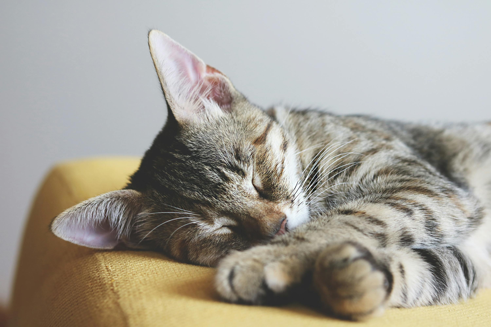

Volunteer Nearby
Below is a list of nearby shelters in the Burke and Fairfax area of Virginia, along with reference pages where you can inquire about volunteer opportunities. A small act of kindness can make a big difference in helping these wonderful felines.
Alexandria Animals - Animal Welfare League of Alexandria